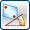

测量表达式
预计完成这堂课需要：9–11 分钟
在表达式对话框中，您可以使用测量下拉菜单  来获取图形窗口中对象的测量值，以用在表达式公式中。测量对象时，将在您正在编辑的公式表达式的光标所在位置插入该测量表达式。
来获取图形窗口中对象的测量值，以用在表达式公式中。测量对象时，将在您正在编辑的公式表达式的光标所在位置插入该测量表达式。
表达式可以引用的几何测量类型有：
-
 距离 — 根据两个对象、一个点和一个对象或者两个点之间的最小距离
距离 — 根据两个对象、一个点和一个对象或者两个点之间的最小距离 -
 长度 — 根据一条或多条曲线以及边的长度
长度 — 根据一条或多条曲线以及边的长度 -
 角度 — 根据两条直线、两个平面、两条线性边、两个基准或者这三个对象组合之间的角度
-
 体 — 测量一个或多个实体的曲面面积、体积、质量、重量以及回转半径
体 — 测量一个或多个实体的曲面面积、体积、质量、重量以及回转半径 -
测量面积 — 计算体的面的面积和周长值。系统为面积和周长创建了多个表达式。
正常的特征参数不允许引用这些抽象的几何属性，比如弧长，但是它们可以引用用户创建的表达式，这在捕捉设计意图或者确保满足工程需求中往往具有更好的灵活性。